## Hands on <img src="pics/QGIS_logo,_2017.svg" height="auto" weight="40%">
## Coordinate Reference Systems (CRS) 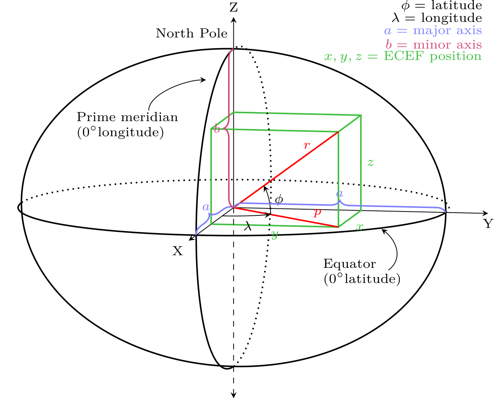 --- #### Geographical coordinate systems: Longitude and latitude coordinates on a sphere / (rotational) ellipsoid #### Projected coordinate systems: Mathematical conversion to convert longitude and latitude coordinates located on the earth's surface into a two-dimensional surface. --- <!-- ### Geoid --> The earth is round. Right? --- #### Geoid 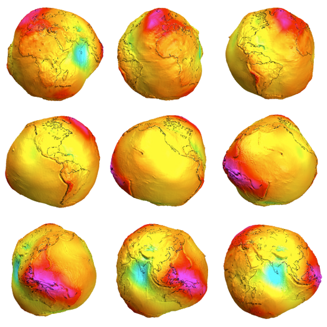 --- #### Geoid 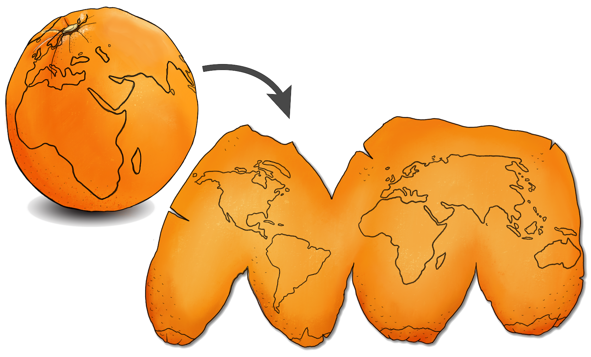 --- ### Ellipsoid 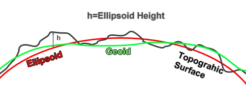 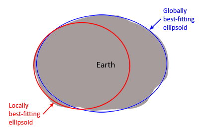 --- 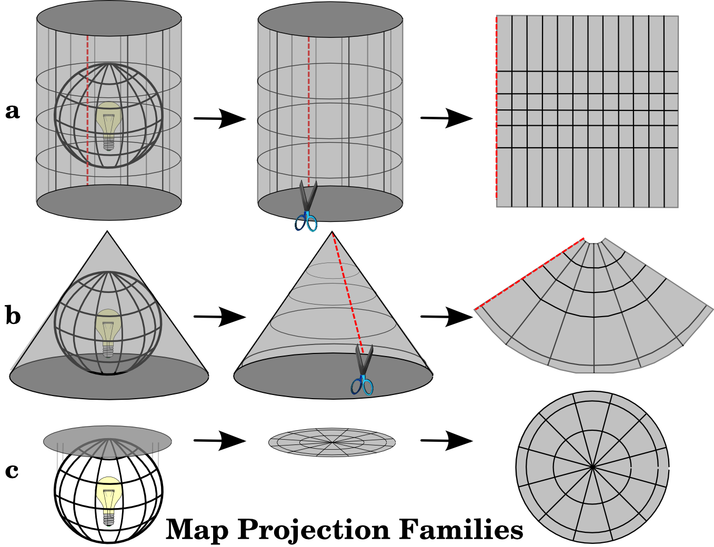 <p style="color: grey; font-size: small;"> https://docs.qgis.org/3.4/en/_images/projection_families.png </p> --- Choosing the wrong CRS will lead to the following problems: * Layers won't match up * Distances won't be correct * Circles turn to ellipses for no apparent reason * ... --- ### Choosing the right CRS <a href="epsg.io" target="blank">Cheat sheet</a>
### Data models 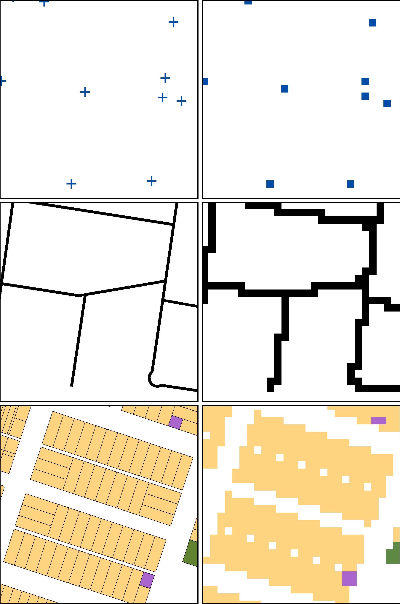 <img src="pics/data_models.png" height="auto%" width="42%" > <p style="color: grey; font-size: small;"> https://spatialvision.com.au/blog-raster-and-vector-data-in-gis/ <br> https://gsp.humboldt.edu/olm/Lessons/GIS/08%20Rasters/RasterToVector.html </p> --- | vector | vs. | raster | | :--- | --- | ---: | | vertices and paths higher geographic accuracy| |geo. accuracy dependent on grid size| | vector manipulation algorithms are complex| |map algebra is usually quick and easy to perform | output is generally more aesthetically pleasing| |cell size contributes to graphic quality </table>
Points Lines ### Vector data Polygons
#### Vector attributes 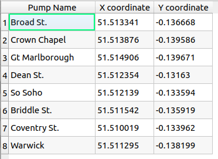 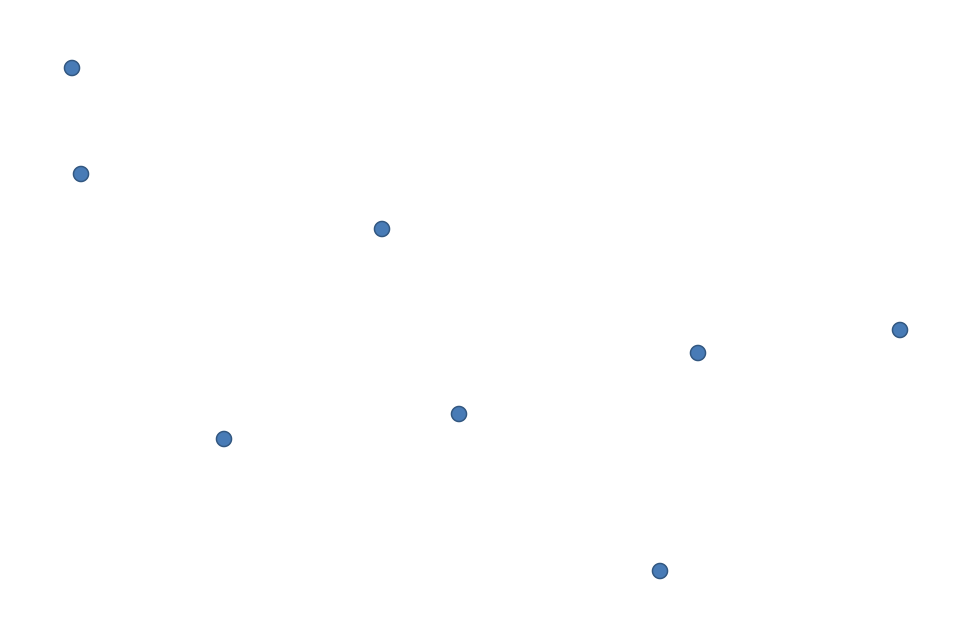
### Raster data 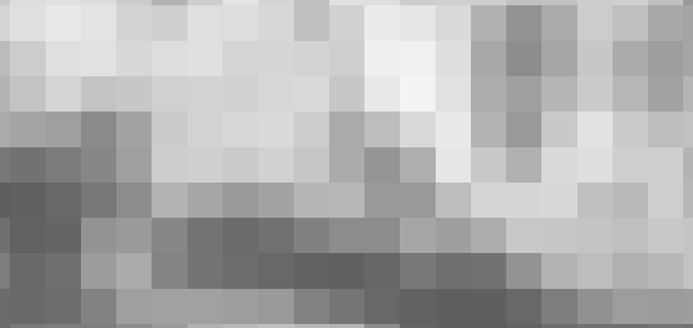 --- #### Raster values 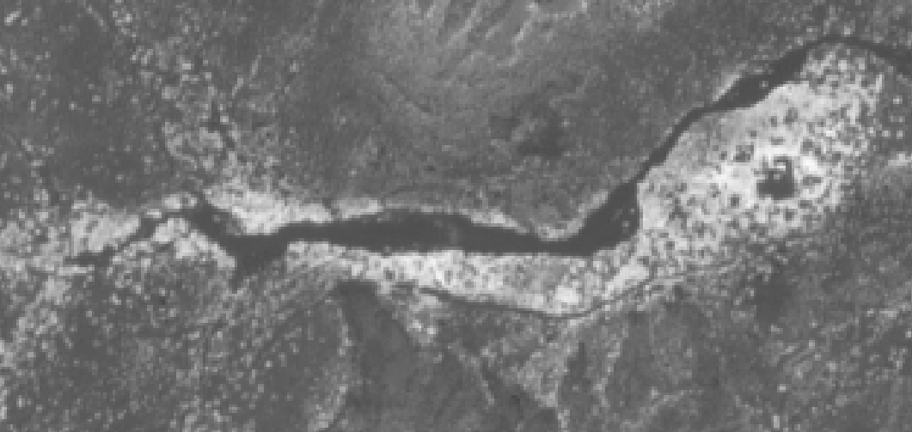 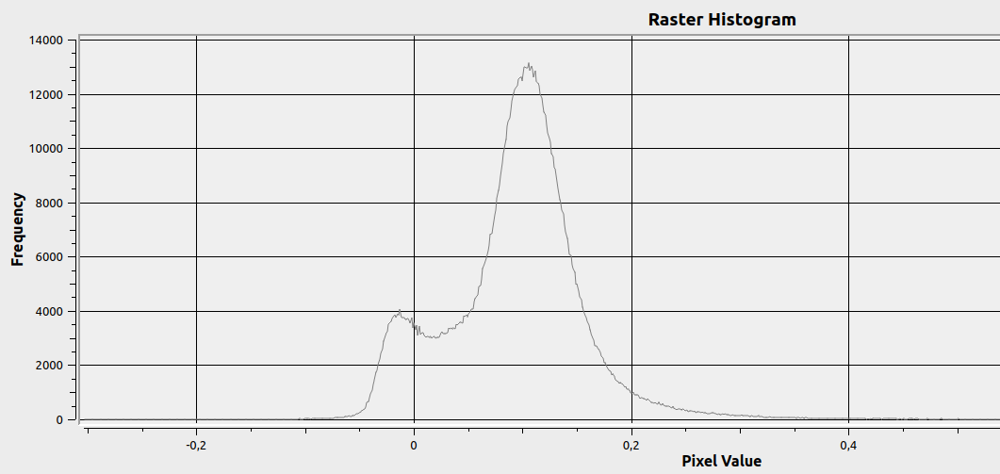 <img src="pics/raster_dataset.png" height="auto" width="19%"> --- #### Bands & Virtual raster 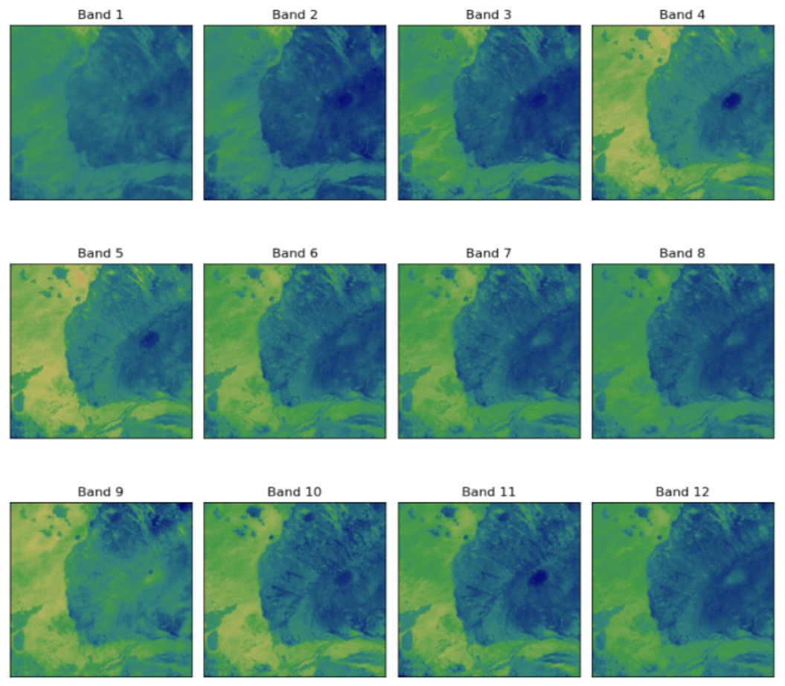 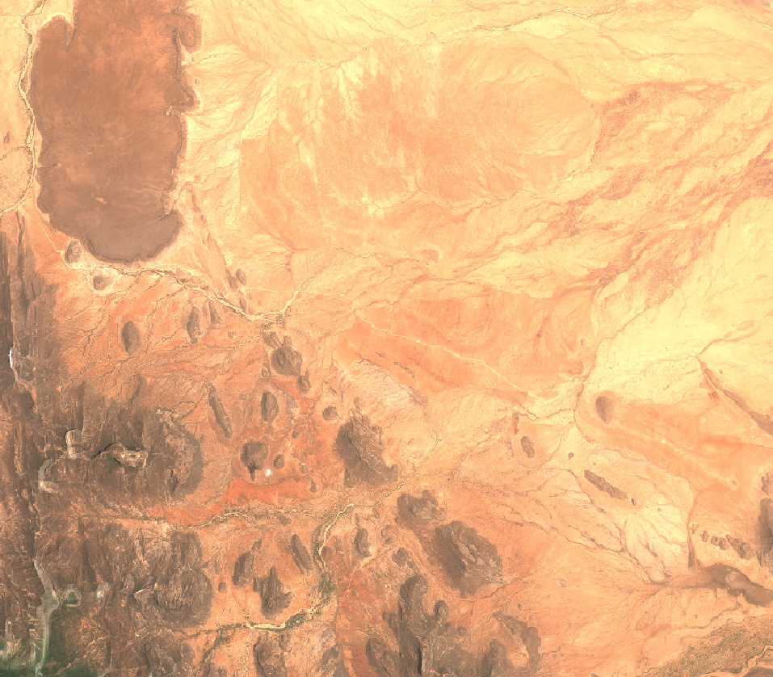 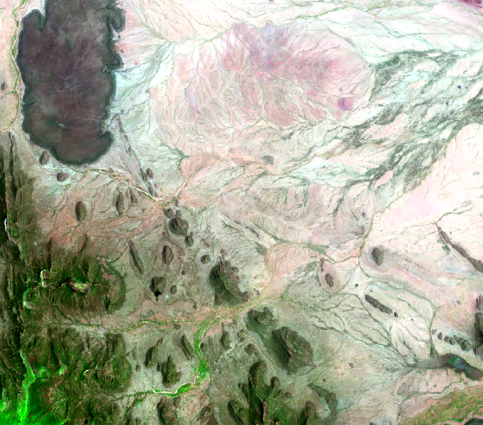 <p style="font-size: small;"> sentinel bands -- rgb image (natural colors)[4,3,2] -- agriculture (highlight dense vegetation and monitor the health of crops)[11,8,2] </p> <p style="font-size: small;"> <a href="https://gisgeography.com/sentinel-2-bands-combinations/" target="_blank">cheat sheet</a> </p>
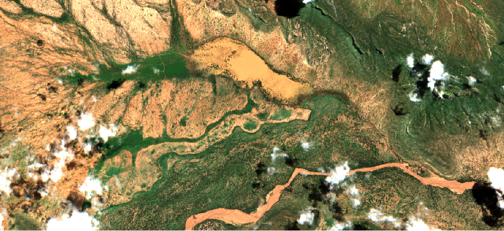 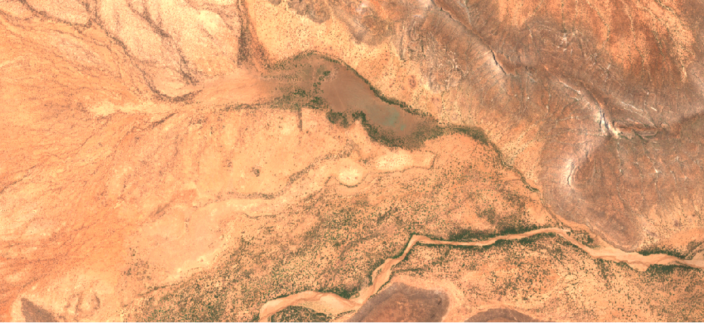
May 2023 vs October 2023
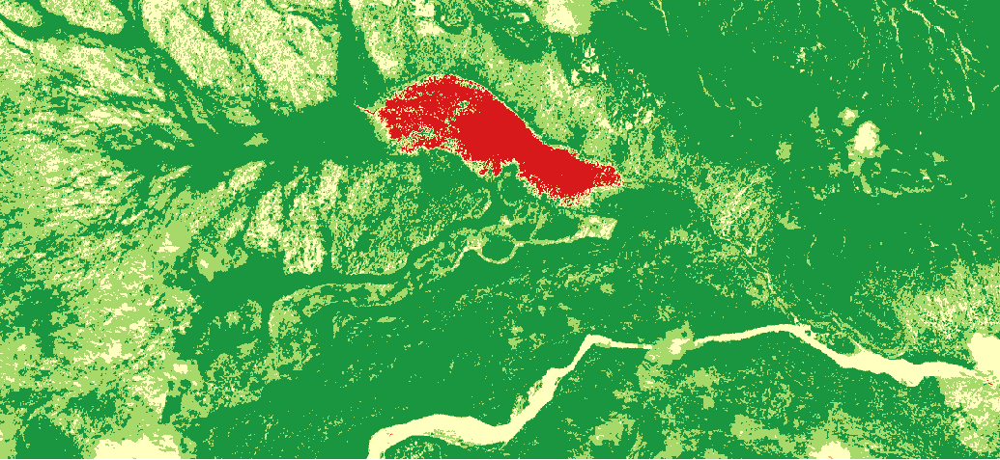 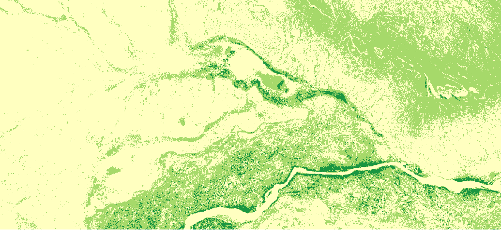
### Publish Project <img src="pics/choleraMap_0001.png" width="80%" height="auto">
### Final notes <a href="https://docs.qgis.org/3.28/en/docs/user_manual/index.html" target="_blank">Documentation</a> --- #### Join the community! <a href="https://www.gisday.com/en-us/overview" target="_blank">GIS Day November 15th</a> <a href="https://www.crunchydata.com/community/events/postgis-day-2023" target="_blank">PostGIS Day November 16th</a>
### Links CRS: https://anythingmapping.com/2021/10/21/why-do-coordinate-systems-matter/ EPSG: http://epsg.io GISgeography: https://gisgeography.com/learn-gis/